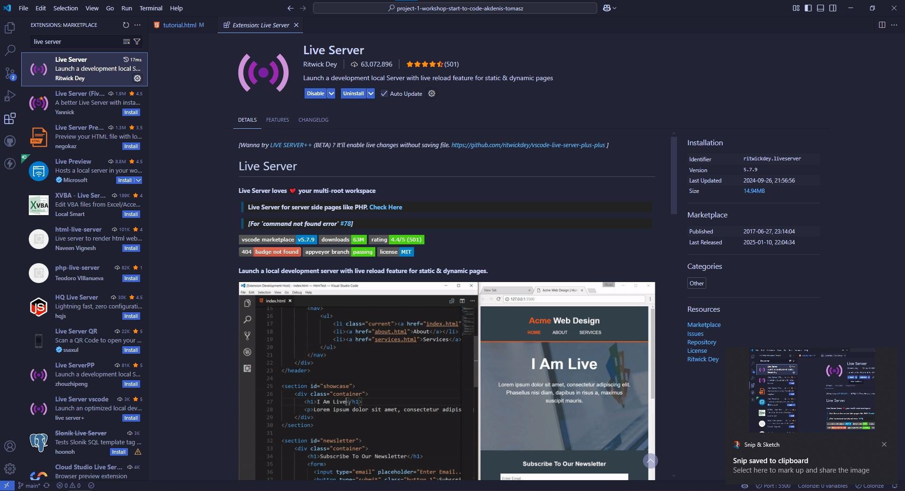

Een introductie tot het programmeren met het bouwen van een klein spel!
We gaan een spel maken waarbij de gebruiker via de muis, bevers zal moeten aanklikken en zo punten te scoren. Zo ga je punten scoren, en kan je het openen tegen vrienden of familie!
Hiervoor gaan we 3 codetalen gebruiken
- HTML
- CSS
- JavaScript
Klaar om een nieuwe wereld te ontdekken?
Om deze applicatie te bouwen gaan we een tool gebruiken: Visual Studio Code
Je kan deze downloaden van de bovenstaande link
- 1.1
Hier kan je de bronbestanden vinden! Download Project ZIP
- 1.2
Open het programma Visual Studio Code en open de folder die je zopas hebt gedownload.
Je folderstructuur zou er nu zo moeten uitzien.
- 1.3
Installeer de live server extensie in Visual Studio Code; die ziet er zo uit:
 - 1.4
Je kan nu de LiveServer starten door met je rechter muisknop te klikken op "index.html" en vervolgens "Open with live server" te kiezen.

We gaan nu onze HTML opstellen - Dit wil zeggen dat we onze webpagina gaan vullen met zichtbare elementen.
- 2.1
We beginnen met een index.html aan te maken in onze "public" folder.
- 2.2
Schrijf op de eerste lijn "!" en druk enter. Je zou normaal dit krijgen.
Dit is wat we noemen het DOCTYPE. Elke HTML pagina begint altijd zo!
Dit is de basis-structuur waar we op zullen verder werken.
- 2.3
We gaan hem nu vullen met verschillende items, zodat onze webpagina vorm zal krijgen. Je kan onderstaande code kopiëren en plakken tussen de body tags.
See the Pen index-start by jeffe (@lopi5639) on CodePen.
In het resultaat kan je zien dat je een titel en 2 knoppen hebt.
- 2.4
Je kan ook zien dat er per lijn code een "class" attribuut staat opgegeven. Deze gaan we later gebruiken om onze elementen een styling te geven. Met andere woorden we gaan het mooi maken. Zo zou je pagina er momenteel moeten uitzien.
- 2.5
Tijd om ons spel mooi te maken en ons canvas een likje "code-verf" te geven, zodat we meer zien dan enkel een witte pagina.
Om een webpagina op te maken, maken we gebruik van Cascading Style Sheets - CSS - Hier geven wij bepaalde waarden mee voor het stijlen van een webpagina. Herinner je je nog dat er een "class" attribuut stond in de html? Wel, deze gaan we aanspreken om het document stijl te geven.
We moeten ook een lettertype meegeven en het CSS bestand vast hangen aan de HTML. Voeg volgende code toe onder je titel:
See the Pen homescr-fonts by jeffe (@lopi5639) on CodePen.
Om het uitzicht te veranderen van onze pagina moeten we eerst een nieuw bestand aanmaken. In de .css map maak je een bestand aan genaamd "home-screen.css" en kopieer je de volgende code in.
See the Pen homescr-css/start by jeffe (@lopi5639) on CodePen.
- 2.6
Als je de webpagina bekijkt, zie je dat er niets is verandert. Dat komt omdat we het CSS bestand nog moeten vasthangen aan de html.
Dit doen we door door volgende code te plakken onder de fonts
<link rel="stylesheet" href="../src/css/main.css" /> - 2.7
Je pagina zou er zo moeten uitzien momenteel.

- 2.8
Nu zullen we nog de knoppen stijlen. Dit mag je ook in de home-screen css file plakken.
See the Pen homescr-btns by jeffe (@lopi5639) on CodePen.
Hier gebruiken we ook een pseudo-element. Dit wil zeggen dat we een effectje kunnen plaatsen, zoals :hover
Hover gebruik je als je met je muis over iets gaat een effect moet plaatsnemen.
Proficiat je eerste werkende pagina is klaar!
Voor de game pagina hebben we enkele onderdelen nodig om erin te zetten:
Zoals de achtergrond, de gaten en de bevers! Laten we areen beginnen.
- 3.1
Aller eerst moet je een nieuw HTML bestand aanmaken. Dat doe je door je public filder te selecteren, rechter muisklik en "new file" aan te klikken.

Nu, deze gemaakt is kunnen we verder!
- 3.2
In dit bestand moet je alvast enkele dingen toevoegen. Kopieer alvast deze code in dit bestand.
Zoals je kan zien, begint elke webpagina bijna altijd hetzelfde.
- 3.3
We zullen nu de gamepagina voorzien van een navigatie, speelbord, score en timer, zodat iedereen zijn score kan zien en de hoeveelheid tijd die ze nog hebben om op de bevers te klikken.
Je kan de volgende code kopiëren in je bestand.
De lijn "Hier komt code" mag je verwijderen en vervangen met het volgende snippet code.Ziezo! Hier heb je een navigatie element toegevoegd. Deze zit nog een in een <header>
- 3.4
Nu hebben we een navigatie op onze gamepagina.
Volgende stap zal het toevoegen zijn van het spelbord. Je hebt deze files al gedownload in het begin. De prent die we gebruiken voor het spelbord zal dan ook in de images folder zitten.
Deze moeten we nu ook nog toevoegen aan onze pagina.
Voeg dit stukje code mee in je code onder de laatste </header> tagNadat je deze code hebt toegevoegd zal je ook een "Timer" en een "Score" moeten maken. Deze zullen we in de volgene stap maken.
- 3.5
In deze stap zullen we de "Timer" en de "Score" maken. Vervang de comment "Hier komt de timer en score" met volgende code.
- 3.6
Normaal zou je nu ongeveer dit moeten hebben:

- 3.7
Je bent goed onderweg!
In de volgende stap zullen we het uitzicht van de game aanpakken.We moeten een lijn code toevoegen aan ons bestand en een nieuw bestand aanmaken in de css map
Zet de volgende code onder de comment "Styling".<link rel="stylesheet" href="../src/css/main.css" /> - 3.8
Styling!
In dit stukje zullen we het uitzicht van de game onder de loep nemen.
Daarvoor moeten we een nieuw bestand toevoegen in de css folder.Deze zal de naam krijgen "game.css"
In je "main.css" bestand zal je die ook moeten importeren door: "@import url("./game.css");" toe te voegen.
Nu kunnen we het beginnen stylen.
- 3.9
We zullen beginnen met ons speelveld een hoogte en breedte te geven.
- 3.10
Nu zullen we ons speelbord opstellen; eveneens zullen we de achtergrond op de juiste grootte zetten.
Wat we hier hebben gedaan, is het volgende:
We hebben van ons speelveld een grid gemaakt. Dit grid hebben we voorzien van rijen en kolommen van een bepaalde grootte. De artikelen die erin komen, hebben we gecentreerd en onderaan uitgelijnd. De achtergrond hebben we verspreid over heel het grid, zodat de bevers uit de gaten kunnen komen. - 3.11
Het volgende dat mooi gemaakt moet worden is de score en de tijd!
See the Pen game-css-time/score by jeffe (@lopi5639) on CodePen.
- 3.12
Nu moeten we de bever nog een correcte grootte geven en hem juist positioneren! Voor later moeten we hem ook een extra waarde toedienen.
De waarde zal ervoor zorgen, als we straks de functionaliteit doen, dat als de bever wordt aangeklikt deze ook verdwijnt. - 3.13
Nu nog een belangrijk detail: we moeten het grid gelijkstellen aan de gaten waar de bever uit zal komen.
Dit gaan we doen door het grid aan te passen en elk vak een bepaalde grootte en breedte te geven.See the Pen game-css-grid/holes by jeffe (@lopi5639) on CodePen.
- 3.12
Je spelbord zou er momenteel zo moeten uitzien

Mooi zo!
We hebben hier het lettertype aangepast, alsook de positie in het grid, en een kleine kopruimte gegeven.
Hier in dit stukje gaan we ons focussen op het maken van het score bord!
- 4.1
Zoals in de vorige stappen, beginnen we eerst met het aanmaken van onze DOCTYPE.
See the Pen scoreb-html/start by jeffe (@lopi5639) on CodePen.
- 4.2
Net zoals de andere pagina's heeft deze ook een navigatie nodig, zodat we altijd terug kunnen naar een andere pagina.
- 4.3
Nu moeten we deze pagina vullen met informatie om een scorebord te maken.
De volgende code zal ervoor zorgen dat je een tabel hebt met rijen waar je "Positie", "Naam" en "Score" kan terug vinden.
See the Pen score-layout by jeffe (@lopi5639) on CodePen.
- 4.4
Nu moeten we nog de knoppen aanmaken waarmee je het spel kan herstarten of sluiten. We hebben hier ook een knop toegevoegd om naar deze tutorial te gaan.
Je mag nu de blauwe comment verwijderen en in de plaats daarvan deze code kopiëren.
See the Pen score-btns by jeffe (@lopi5639) on CodePen.
Ziezo! Dit zou moeten volstaan voor de elementen van het scorebord.
-
We zullen dit scorebord nog stylen, en dan kunnen we aan de functionaliteit beginnen van heel het spel. Want momenteel hebben we enkel
een mooi spelbord, maar alle functionaliteit die een spel een spel maakt, zit er nog niet in. - 4.5
We zullen beginnen met ons document te connecteren met het CSS bestand. Voeg de volgende lijn code bij onder de comment "Styling"
<link rel="stylesheet" href="../src/css/main.css" /> - 4.6
Nu maken we een nieuw bestand aan in de CSS folder met de naam: "_scoreboard.css"
- 4.7
Om te beginnen geven we een grootte aans ons scorebord en stellen we het font in. Deze code mag je toevoegen aan het nieuwe aangemaakte bestand.
We stellen ook in hoe onze lijstelementen eruit zullen zien.See the Pen score-css/layout by jeffe (@lopi5639) on CodePen.
- 4.8
We maken ook alvast een styling aan voor onze start timer. Deze zal van 3 naar 0 tellen en zal in het javascript gedeelte aangemaakt worden.
Maar het is goed om deze al te maken. - 4.9
Nu zullen we een styling maken voor het venster dat zal verschijnen na het spel is afgelopen. Hier zullen we onze scoren aan kunnen toevoegen.
- 4.10
Dit zal een iets langer stukje code zijn. Maar deze code heeft allemaal te maken met hoe de elementen binnen in het venster, waar je je score kan ingeven, eruit zullen zien.
See the Pen score-modal/inputs by jeffe (@lopi5639) on CodePen.
Deze code zorgt er ook voor dat onze knoppen zullen reageren als je erover gaat met de muis. Met het :hover pseudo-element zorgen we er dus voor dat de achtergrondkleur verandert en het iets groter zal worden.
- 4.11
We maken nu ook een animatie aan, zodat we het scherm zien verschijnen op een aangenamere manier.
See the Pen score-animation by jeffe (@lopi5639) on CodePen.
- 4.11
We moeten nu ook nog de knoppen van het scorebord zelf een styling geven.
See the Pen score-buttons/ain by jeffe (@lopi5639) on CodePen.
Bemerk ook dat we hier weer een :hover pseudo-element hebben gebruikt, voor de functionaliteit van de knop als je erover gaat met de muis.
-
Dat is dan ook al klaar! Op naar de volgende stap.
Volgende deeltje is tevens ook het moeilijkste! We gaan beginnen aan de functionaliteit van heel het spel. Hiervoor gaan we de codetaal JavaScript gebruiken.
- 5.1
We maken verschillende nieuwe bestanden aan in onze js folder. Hier maken we de volgende bestanden aan:
- "_cursor.js"
- "_home-screen.js"
- "_scoreboard.js"
- "_timer.js"
- "game.js"
- "scoreboard.js"
- 5.2
In "_cursor.js" zetten we volgende code
See the Pen game-cursor by jeffe (@lopi5639) on CodePen.
Deze code zal ervoor zorgen dat als we op onze mol of bever slaan, het hamertje naar beneden zal gaan.
Om het heel gemakkelijk te stellen, zijn het eigenlijk twee foto's van een verschillende positie van een hamertje.
Met het drukken op de knop zal het spel weten dat het moet veranderen van foto. - 5.3
Het volgende dat belangrijk is, is dat onze koppen op de homescreen een soort functionaliteit hebben. Namelijk een "click eventListener".
Deze zal reageren wanneer er geklikt zal zijn op een van de knoppen. Kopieer deze code in het "_home-screen.js" bestand.See the Pen homescr-buttons by jeffe (@lopi5639) on CodePen.
Op de eerste twee lijnen code halen we een element op vanuit het DOM, dit is u webpagina.
We moeten deze ophalen, zodat we iets met de elementen kunnen doen; zoals bv een click eventListener toevoegen.
- 5.4
We zullen nu overgaan naar het spel zelf!
Je mag deze code plakken in het "game.js" bestand.We maken variablen aan met daarin informatie dat de code kan onthouden. (const , let)
Je mag dit vergelijken met een schuifje in een kast met daarin een iets dat moet onthouden worden.
Het programma zal hierin kijken, en weten wat erin zit.We maken ook een "click eventListener" weer aan zodat we de bevers kunnen aanklikken.
Deze zal er voor zorgen dat de bever verdwijnt na het aanklikken, de score verhogen met 1 en de score ook verversen met de nieuwe score, als je juist hebt geklikt uiteraard. - 5.5
In het volgende deel code, maken we een switch-case en een functie aan.
Wat is een functie? Wel een functie is zoals een instructiekaartje. Stel je voor dat je telkens weer iets opnieuw moet doen, moet je dit maar 1 keer opschrijven en kan je de functie zelf meerdere keren oproepen.
En een switch-case daarintegen? Wel dit is een soort van keuzemenu. Doordat we een functie aanmaken dat een willekeurig nummer aanmaakt en doorgeeft aan de switch-case, we ook een andere situatie doorkrijgen. Zo kunnen we de mol/bever op verschillende plaatsen laten verschijnen op het spelbord.
See the Pen game-js-switch by jeffe (@lopi5639) on CodePen.
Op het einde staat er ook een functie die onze inhoud van de webpagina ververst die we later in de code zullen aanroepen
- 5.6
Nu moeten we nog nog de gameloop starten. We maken weer variablen aan en maken enkele functies aan.
We moeten ervoor zorgen dat de speler een startschot krijgt voor zijn spel. Dus we maken hier een Timer die naar beneden zal tellen van 3.
See the Pen game-js-gamestart by jeffe (@lopi5639) on CodePen.
- 5.7
Bij de start van het spel moet je score 0 zijn en de hoeveelheid tijd moet ook al ingesteld zijn.
In het volgende stuk code stellen we onze score gelijk aan 0 en maken we een timer die ons, in dit geval, 18sec zal geven.
See the Pen game-js-startgm by jeffe (@lopi5639) on CodePen.
- 5.8
Nadat onze tijd is afgelopen, en we een heleboel mollen of bevers hoofdpijn hebben bezorgd, moet er een scherm tevoorschijn komen waar we onze score in kunnen geven. Daarna moet ook het scorebord op het scherm verschijnen.
See the Pen game-js-endgm by jeffe (@lopi5639) on CodePen.
- 5.9
Op het scorebord heb je normaal 3 knoppen: restart, exit en tutorial.
We moeten functionaliteit geven aan deze knoppen. Voor jou spel moet er geen tutorial knop bij staan natuurlijk.
Plak deze code maar in het "scoreboard.js" bestand.See the Pen scorebrd-buttonsfunc by jeffe (@lopi5639) on CodePen.
Normaal gezien werken nu de knoppen te herstarten en de knop om terug naar de home pagina te gaan.
- 5.10
De volgende stap zal erin bestaan om een kleine database te maken die enkel lokaal werkt.
Hier maken we variablen aan om onze scores bij te houden in het lokaal geheugen.
See the Pen scorebrd-highscrs by jeffe (@lopi5639) on CodePen.
- 5.11
We maken nu een fucntie aan waar we andere logica stap per stap zullen in zetten.
See the Pen scorebrd-fnctStart by jeffe (@lopi5639) on CodePen.
- 5.12
We maken variablen aan waar we een object uit onze webpagina ophalen en stellen ze gelijk aan iets dat leeg is.
We maken ook een functie die je positie terug geeft als je in de top 3 staat!
Deze code mag ja plakken in de plaats van de comment "// hier komt nog logica".
See the Pen scorebrd-fnc/start by jeffe (@lopi5639) on CodePen.
- 5.13
In het volgende stuk code zorgen we ervoor dat de scores worden gesorteerd en toegevoegd aan het scorebord.
- 5.14
We maken nu nog een functie die de speler zijn positie gaan ophalen, deze kan je na de laatste accolade erbij plakken
- 5.15
Deze laatste functie zal er voor zorgen dat je een highscore kan toevoegen!
See the Pen scorebrd-addHscr by jeffe (@lopi5639) on CodePen.
- 5.16
He..He.. dat was nogal een klus! Op dit punt zou je een volledig functioneel Whack-a-Mole spel gemaakt.
Je kan nu ook je vrienden of familie uitdagen voor een rondje mollen of bevers op hun hoofd te kloppen.